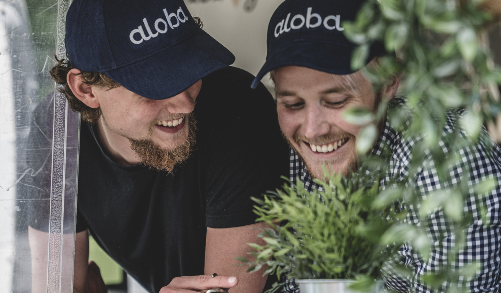
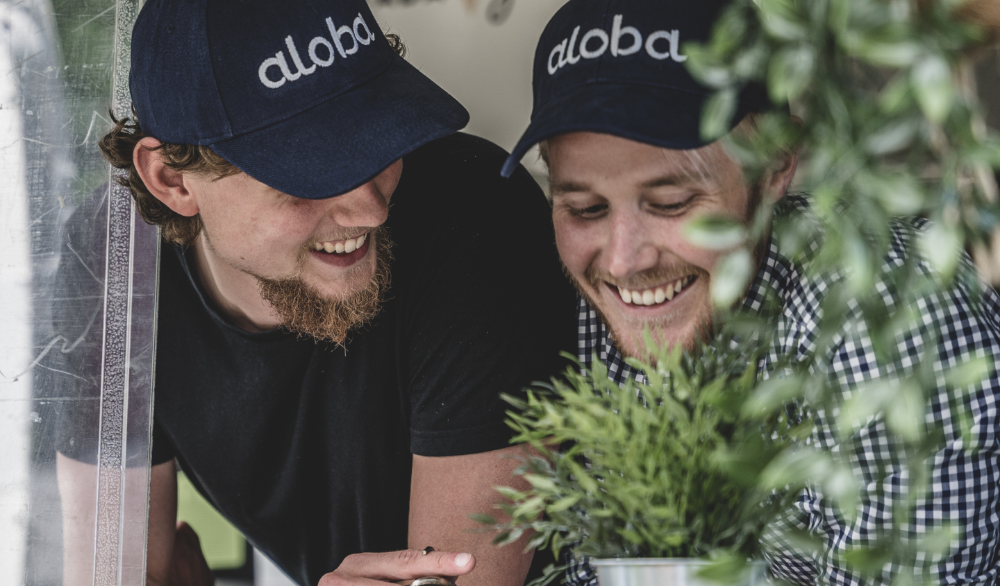

Aloba
Aloba is brand new food product made from oats, barley and algae - good for both you and the planet.
My role
My role was to create a digital visual identity and to design and develop a website using Figma, HTML, CSS, Javascript.
Approache
The design is based on an iterative process including surveys with potential customers and workshops with the client to create a shared mental image of how the website should look like and what functions it should hold. The design was developed by creating mockups, wireframes and a hi-fi prototype that was presented to the client and introduced to a limited amount of potential users.
Solution
The website was developed according to conventional user interface design guidelines. It's responsive on different devices and easy to navigate. The interface have a cohesive graphic profile inspired by the nature and our nordic landscape, representing Alobas vision and ingredients.
- Client:
- Services:
- Year:
- Link:
- Aloba Foods
- UI, UX, JavaScript
- 2021
- www.alobafoods.se
 
